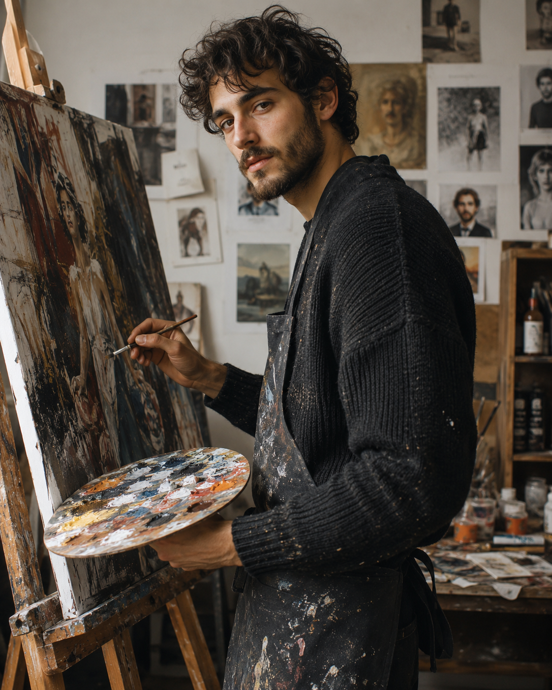
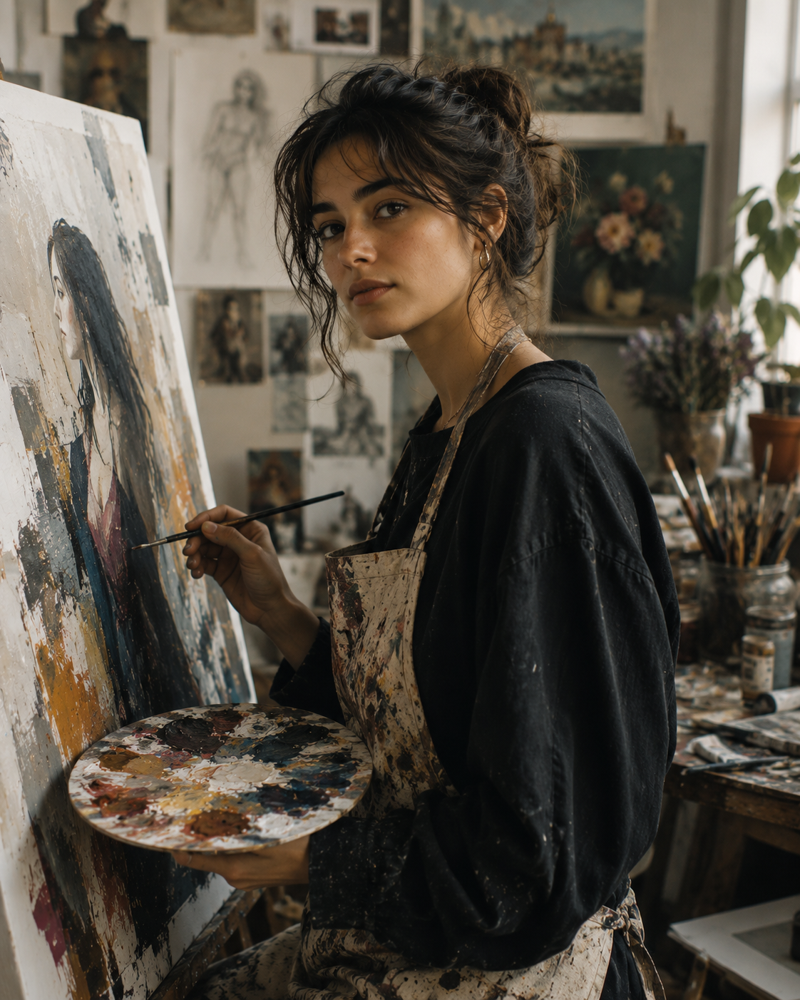
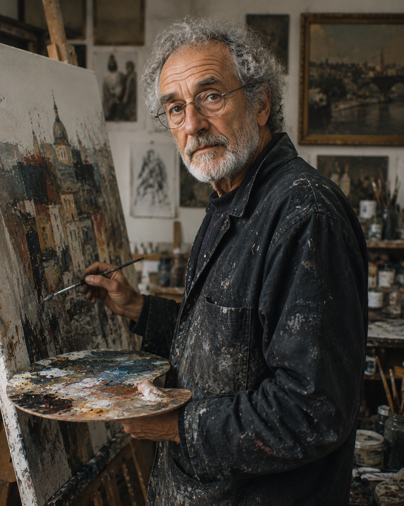
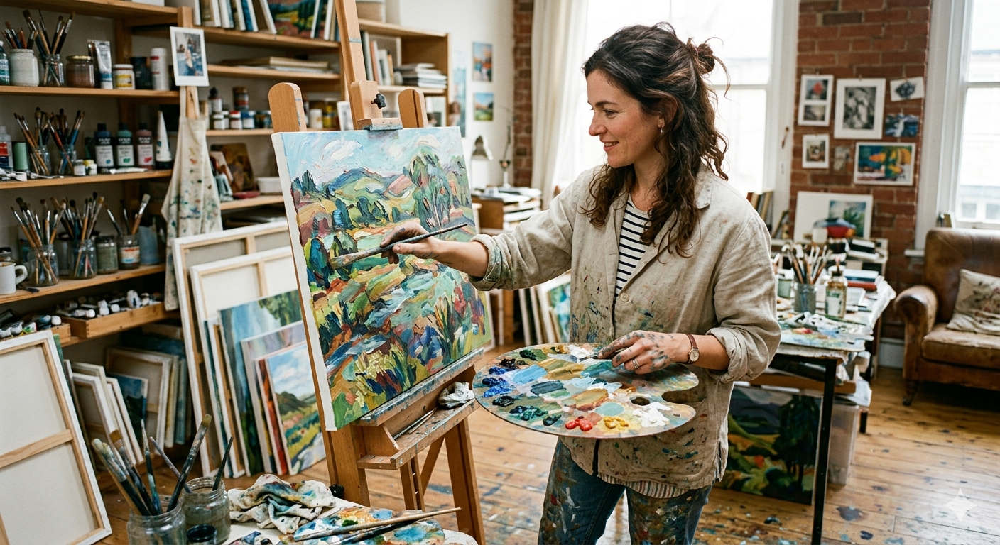
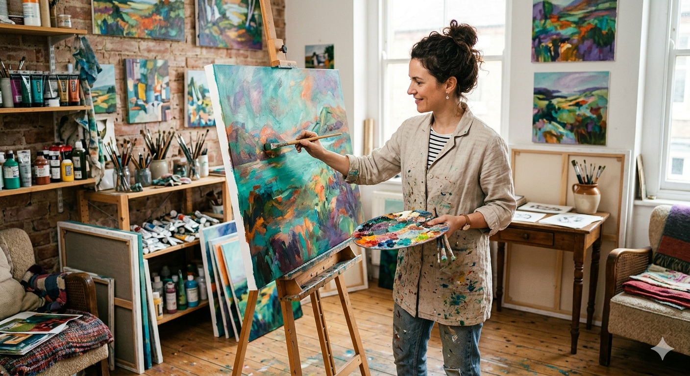
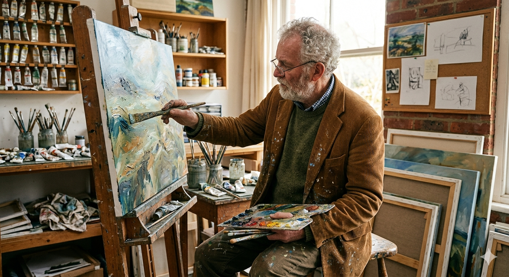
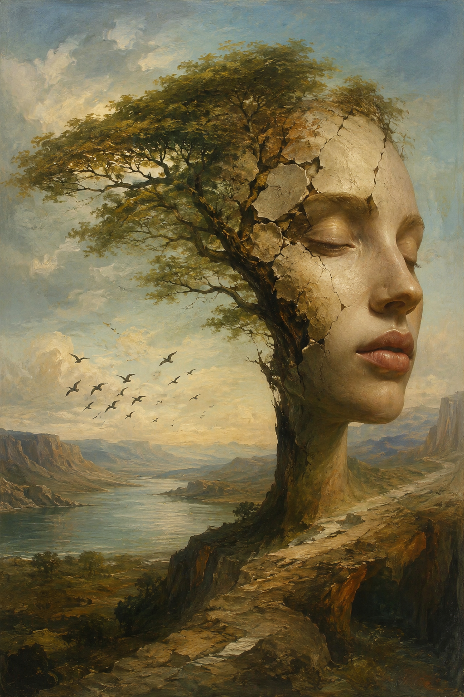
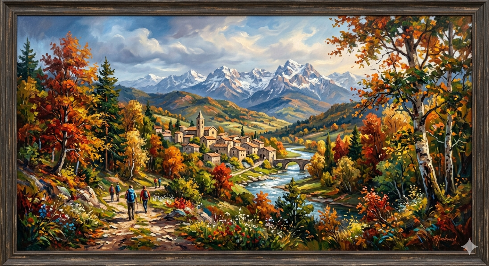

Prompt "Genera una imatge d'un artista"

L'experiment d'aquesta entrada és diferent dels altres: no busca un resultat estètic sinó fer visible el que la IA dona per fet. La pregunta no és "com genera la IA una imatge?" sinó "què assumeix quan la genera?".
L'experiment ha tingut dues rondes. La primera explorava la idea d'"artista": he llançat tres prompts a dues eines diferents (DALL-E i Gemini), cadascun en un fil nou sense cap context previ. "Genera una imatge d'un artista", "Genera una imatge d'una artista" i "Genera una imatge d'un artista de 70 anys". Tres prompts mínims, sis imatges, i cap instrucció sobre raça, activitat, entorn ni estil.
En veure que les sis imatges mostraven persones pintant, va sorgir una segona pregunta: si la IA assumeix que un artista és un pintor, què assumeix que és "art"? Aquesta segona ronda neix de la primera, no la substitueix. He obert fils nous a les dues eines i he llançat un únic prompt: "Genera una obra d'art". Volia veure si, en treure la persona de l'equació, el biaix canviava.
Prompt "Genera una imatge d'un artista"

Prompt "Genera una imatge d'una artista"

Prompt "Genera una imatge d'un artista de 70 anys"

Prompt "Genera una imatge d'un artista"

Prompt "Genera una imatge d'una artista"

Prompt "Genera una imatge d'un artista de 70 anys"

Prompt "Genera una obra d'art"

Prompt "Genera una obra d'art"

Vuit imatges. Vuit pintures. Vuit vegades el segle XIX europeu. Cap fotografia, cap escultura, cap instal·lació, cap art digital, cap performance. Cap persona ni obra que no sigui blanca i occidental. La IA, tant DALL-E com Gemini, té una noció d'art que pertany a un temps i un lloc molt concrets.
El biaix de gènere és el més visible, però no funciona igual a les dues eines. DALL-E associa "un artista" amb un home jove; Gemini, amb una dona. Aquesta diferència no és casual: Gemini probablement ha estat ajustat per corregir el biaix masculí per defecte. Però la sobrecorrecció també és un biaix, perquè el model decideix per tu que "artista" hauria de ser femení. En tots dos casos, la IA omple un forat que jo havia deixat obert deliberadament, i l'omple amb les seves pròpies assumpcions.
El biaix més profund, però, no és el de gènere. És el conceptual. "Artista" = "pintor occidental amb cavallet". "Obra d'art" = "pintura d'estil clàssic". Gemini fins i tot ha afegit un marc de fusta i una signatura falsa, com si "art" no pogués existir sense el ritual de l'autenticació. Aquestes equacions no apareixen en cap dels prompts: surten del model, de les dades amb què ha estat entrenat, del pes estadístic de milions d'imatges on "art" apareix associat a pintura occidental.
L'estètica de cada eina també revela supòsits. DALL-E genera retrats dramàtics i foscos; Gemini genera escenes lluminoses i càlides. Cap de les dues estètiques les he demanat jo: són decisions editorials que el model pren per mi, i que jo hauria assumit com a pròpies si no les hagués comparat.
Aquesta entrada em fa pensar que el biaix no és un error puntual que es pot corregir amb un prompt millor. És una capa invisible que actua sempre que la IA genera, i que només es fa visible quan formulem la pregunta adequada, o quan no formulem cap pregunta en absolut.
Què assumeix la IA quan li demano art?